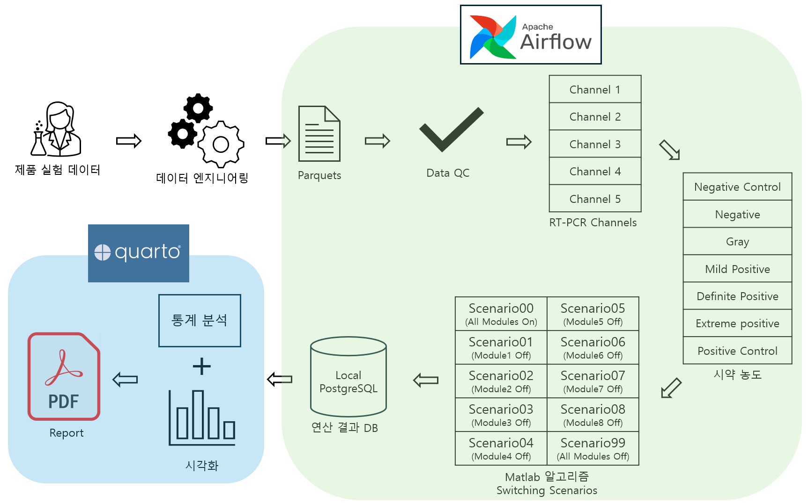
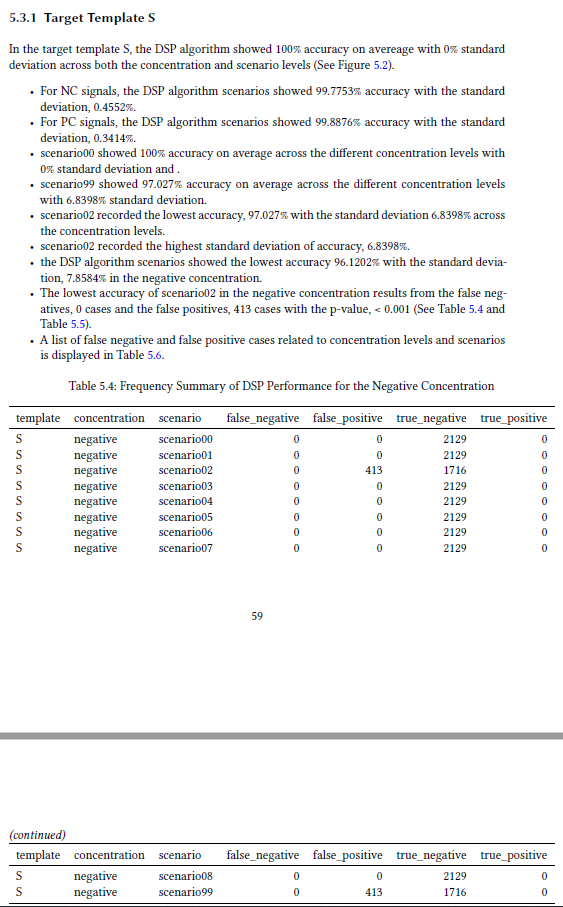
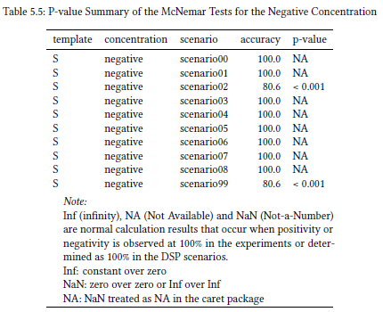
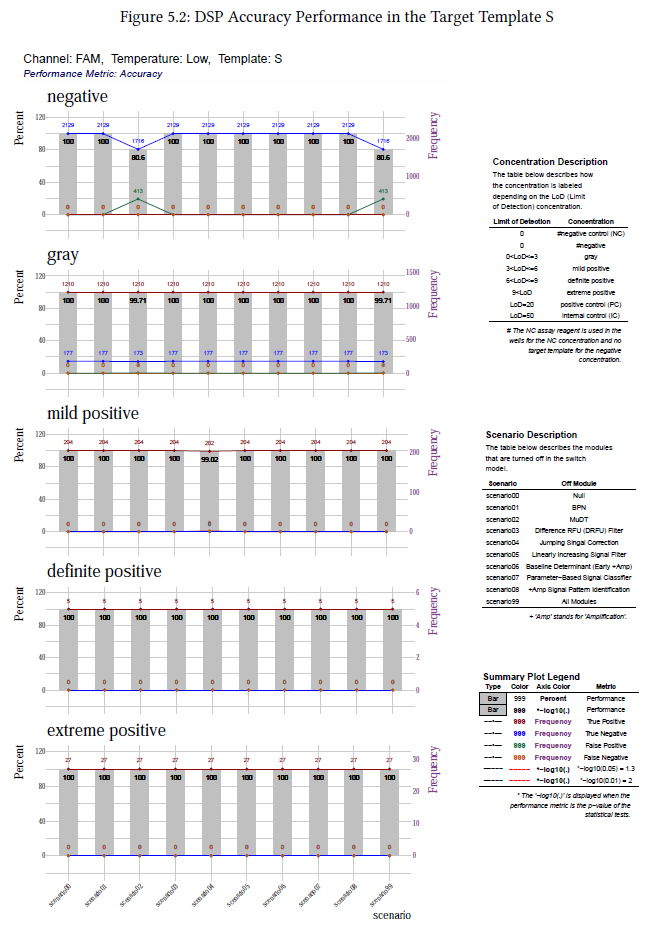

FDA Algorithms Validation
Seegene’s Top Priority Project: Diagnostic Signal Processing Algorithm Validation for Surveilance
This project is necessary for entering global markets to prepare for the requirement of governments all around the world. Due to security concerns, it is difficult to display the data used in this project.
Author
Kwangmin Kim
Published
November 22, 2023
- 목적: 북미 진단 시장 진출을 위한 알고리즘 검증용 문서 작성 반 자동화
- 기간: 2023.01 - 2023.11 (11 months)
- 역할: Project Manager & Data Scientist
- 참여 인원: 5명의 데이터 사이언티스트, 3명의 데이터 엔지니어, 27명의 생물학자, 1명의 변리사, 1명의 특허 실무자
- 의료 장비와 연관된 시약 제품의 특성상 Global Market 진출시 각 국가의 정부에서 자국민의 건강 및 생명의 안전을 위해 요구하는 규제사항들이 있다.
- 시약의 안정성 검증 요구
- 장비의 안정성 검증 요구
- Software의 안정성 검증 요구
- Diagnostic Algorithm의 안정성 검증 요구
- COVID19 특수 시기 해제 후 Global market으로의 진입 및 관리를 위해 각 국의 정부가 요구하는 제품의 안정성 검증 및 규제 사항들을 충족시켜야한다.
- EU(European Union)의 경우 IVDR (In Vitro Diagnostics Regulation) 을 요구한다.
- 북미시장에 진출하기 위해 세계에서 가장 엄격한 기준을 요구하는 미국의 FDA와 캐나다의 Health Canada의 surveilance 기준으로 진단 알고리즘의 안정성 검증 문서를 기획하고 작성해야한다.
- 시간이 지날 수록 각 국에서 software 및 algorithms에 대한 규제가 강화되고 있기때문에 기존의 Software Engineering에 의한 안전성 검증 방식보다 더 엄격한 Advanced Testing이 요구되고 있다.
- Seegene의 Diagnostic Signal Process (DSP) Algorithm의 안정성 검증 방식은 기업의 사업성과 직결되는 만큼 회사내에서 1급 보안사항으로 분류되어 구체적이고 자세한 기획 및 구현 내용을 공유할 수는 없다.
- algorithm이 안전한 성능을 보여준다는 것을 통계적으로 증명하기 위한 system을 기획한다.
- algorithm이 안전한 성능을 보여준다는 것을 Statistical Validation Sytem을 확립하여 통계적 분석으로 증명한다.
- 여기서, 확립 (Establishment)은 정의(definition), 문서화(documentation) 및 구현 (Implement)으로 정의된다.
- algorithm의 risk를 구체적으로 정의하고 risk가 algorithm에 미치는 영향도를 정량 분석한다.
- algorithm이 risk 관리가 가능하다는 것을 statistical simulation을 통해 증명한다.
- algorithm 구현 및 운영에 있어서 code의 변화가 있을 경우 새로운 validation report를 제출해야하므로 자동화 시스템을 구축한다.
- 세계에서 가장 엄격한 검열 인증서를 발급 및 교육을 제공하는 기업인 SGS의 guidance를 참고한다.
- SGS는 FDA를 target으로 guidance를 제공한다.
- Software의 안전성 검증을 위해 FDA에서 제공하는 General Principles of Software Validation 문서를 정독 후 이 문서를 기반으로 validation system을 확립한다.
- Software engineering은 General Principles of Software Validation 문서를 기반하여 수행한다.
- Diagnostic Algorithm의 안정성 검증은 Structural Testing와 Advanced Testing 모두 포함한다. Structural Testing은 code 기반의 Software Engineering Testing을 의미하고 Advanced Testing은 Statiscal Analysis에 기반한 Statistical Testing을 의미한다. Advanced Testing은 안정적인 Software Engineering System 구축이 그 전제가 된다.
- algorithm 안전성에 대한 정의와 논리를 확립한다.
- algorithm 안전성에 대한 지표를 확립한다.
- Advanced Testing인 Statistical Testing은 data scientist의 창의성이 요구되는 작업으로 Testing Model을 기획하여 statistical analysis design을 구체화 및 문서화한다.
- BT (Biotechnology) 부문과 IT (Information technology) 부문의 협력이 전제가 되어야하며 BT 부서의 experiment design 및 limitation factors at a experimental level을 고려한 engineering design과 statistical design을 확립한다.
- 기획된 Testing model에 적합한 statistical model을 찾고 minimum reuirement sample size를 계산한다.
- 위의 전략대로, BT 부서에서의 실험과 IT 부서 (Data Science 팀)에서 분석을 수행한다.
- algorithm 구현 및 운영에 있어서 code의 변화가 있을 경우와 새로운 제품에 대한 새로운 validation report를 제출해야하는 의무사항에 대비한 문서 자동화 시스템을 구축한다.
- BT에서 생성된 data를 입력할 수 있는 시스템 부재
- BT부서의 업무기술서 부재로 인한 소통의 어려움
- 입력 데이터를 전처리하는 시스템 부재
- Data Science 팀내 업무 기술서 부재로 인한 팀내 소통의 어려움
- Validation report에 대한 선례 및 template를 찾을 수 없을 정도로 매우 드물다.
- BT에서 생성된 data를 입력할 수 있는 시스템 구축
- digitalization: experimental design file, raw data generated from medical device, data extracted from medical device
- BT부서와의 소통으로 업무 문서화를 진행하여 실험 결과의 기대 정답 기준 확립, 독립 변수 및 종속 변수 확립
- 입력 데이터를 전처리하여 diagnostic algorithm의 결과물을 병합하는 engineering 시스템 구축
- Data Quality Control Process 강화
- 1단계 오타 교정
- 2단계 결측치 처리
- 3단계 anomaly data 처리
- 4단계 algorithm data 정합성 1차 검정: FDA validtion을 위한 전처리된 algorithm vs Original algorithm
- 5단계 algorithm data 정합성 2차 검정: Data Science팀의 FDA validtion을 위한 전처리된 algorithm vs BT 부서에 published algorithm
- Data Science 팀내 업무 기술서 작성으로 코드 중앙화, 데이터 중앙화, 특이사항 문서화 실현
- Seegene 고유의 software testing & advanced testing model 기획 및 확립 후 statistical analysis 기획 및 수행
- FDA software validation knowledge
- Statistics
- Dynamic documentation
- Biology
- Clinical study design
- R, Python, Matlab
- Apache Airflow
- 5 data scientists (I am a project manager.)
- 3 data enineers
- 27 biologists
- 2 patent attorneys
- BT의 업무 기술서를 협업으로 공동작성하고 RDB system 구축
- 시약, 장비, software 및 algorithm Validation용 DevOps Platform 구축
- Due to the nature of reagent products related to medical device, there are regulations required by each country’s government for the health and life safety of its citizens when entering the global market.
- Reagent stability verification and validation required
- Equipment stability verification and validation request
- Software stability verification and validation request
- Stability verification and validation Request of Diagnostic Algorithm
- In order to enter and manage the global market after the COVID19 special period is lifted, product safety verification and regulatory requirements required by each country’s government must be met.
- In the case of the EU (European Union), IVDR (In Vitro Diagnostics Regulation) is required
- In order to enter the North American market, it is necessary to plan and write a document verifying the stability of the diagnostic algorithm based on the surveilance standards of the US FDA and Canada’s Health Canada, which require the world’s most stringent standards.
- As time goes by, regulations on software and algorithms are being strengthened in each country, so advanced testing that is more stringent than the existing safety verification method by software engineering is required.
- Therefore, the stability verification and validation of the diagnostic algorithm includes software engineering testing and advanced testing. Here, advanced testing means statistical testing based on statistical analysis, and building a stable software engineering system is the prerequisite.
- Since the stability verification method of Seegene’s Diagnostic Signal Process (DSP) Algorithm is directly related to the business performance of the company, it is classified as a first-class security matter within the company, so specific and detailed planning and implementation details cannot be shared.
- Design a system to statistically prove that the algorithm shows safe performance.
- Establish a Statistical Validation System to prove that the algorithm shows safe performance through statistical analysis.
- Here, Establishment is defined as Definition, Documentation, and Implementation.
- Define the risk of the algorithm in detail and quantitatively analyze the effect of the risk on the algorithm.
- It is proved through statistical simulation that the algorithm is capable of risk management.
- In the case of code changes according to algorithm implementations and operations, a new validation report must be submitted, so an automation system is built.
- Refer to the guidance of SGS, a company that issues and provides training for the world’s most stringent inspection certificates.
- SGS provides guidance to the FDA as a target.
- After thoroughly reading the General Principles of Software Validation document provided by the FDA for software safety verification, establish a validation system based on this document.
- Software engineering is performed based on the General Principles of Software Validation document.
- The stability verification of Diagnostic Algorithm includes both Structural Testing and Advanced Testing. Structural Testing means code-based Software Engineering Testing and Advanced Testing means Statistical Testing based on Statistical Analysis. Advanced Testing is based on the establishment of a stable Software Engineering System.
- Establish a definition and logic for algorithm safety.
- Establish metrics or indicators for algorithm safety.
- Statistical Testing, which is Advanced Testing, is a task that requires the creativity of a data scientist, and a testing model is planned to materialize and document statistical analysis design.
- Cooperation between the BT (Biotechnology) sector and the IT (Information technology) sector must be a premise, and engineering design and statistical design should be established considering the BT department’s experimental design and limitation factors at a experimental level.
- Find a statistical model suitable for the planned testing model and calculate the minimum reuirement sample size.
- As per the above strategy, the BT department conducts experiments and the IT department (Data Science team) conducts analysis.
- Establish a document automation system in case of code changes in algorithm implementation and operation and the obligation to submit a new validation report for new products.
- Absence of a system that can input data generated by BT departments
- Difficulties in communication due to lack of job description in BT departments.
- Absence of a system that preprocesses input data.
- Difficulties in communication within the team due to lack of job description within the Data Science team.
- It is so rare that no precedent or template for validation report can be found.
- Building a system that can input data generated by BT departments
- digitalization: experimental design file, raw data generated from medical device, data extracted from medical device
- Work documented through communication with the BT department to establish the standard for the expected correct answer of the experiment results, and to establish independent and dependent variables
- Building an engineering system that preprocesses input data and merges the results of diagnostic algorithms
- Strengthen Data Quality Control Process
- Step 1 typo correction
- Step 2 missing value processing
- Step 3 anomaly data processing
- Step 4 algorithm data conformity 1st Test: Preprocessed algorithm for FDA validation vs Original algorithm
- Step 5 algorithm data conformity 2nd test: Data Science team’s preprocessed algorithm for FDA validation vs algorithm published by BT department
- Realization of code centralization, data centralization, and documentation of specific matters by writing job descriptions within the Data Science team
- Plan and conduct statistical analysis after planning and establishing Seegene’s own software testing & advanced testing model
- FDA software validation knowledge
- Statistics
- Dynamic documentation
- Biology
- Clinical study design
- R, Python, Matlab
- Apache Airflow
- 5 data scientists (I am a project manager.)
- 3 data enineers
- 27 biologists
- 2 patent attorneys
- Collaboratively write BT’s job description and establish RDB system
- Building a DevOps Platform for reagents, equipment, software and algorithm validation
1 개요
2 Background
3 Objective
4 Methodology
4.1 Data Pipeline

5 Issues 및 Solutions
5.1 Issues
5.2 Solutions
6 Required Skills
7 Colaborators
8 Results
8.1 Visualization Result Examples



8.2 Acheivements
| DSP Algorithm Output | Description |
|---|---|
| FDA Validation 1st Draft | FDA 제출용 verification & validation report 1차 초안 |
| Data Input System | 임시적인 데이터 입력 시스템으로 대량의 data를 대량으로 연산하는 플랫폼 구축으로 발전 |
| Documentation System | 기존에 부재했던 문서화 및 문서 자동화 시스템 구축 \(\rightarrow\) 업무 소통과 Relational Database System 구축에 필요 |
| Data Management System | data quality control system |
| FDA Validation Model | DSP algorithm을 위한 Validation Model 확립 |
| Patent Invention | FDA Validation Model 발명 |
| In-house first Performance evaluation of algorithms and reagent products | 사내에 기존에 존재하지 않았던 알고리즘 및 시약 제품의 종합 성능 평가 |
| Statistical analysis related to algorithmic risk management | 시약과 장비 고유의 random effect와 다른 교란자로 인해 발생할 수 있는 noise 및 anomaly data에 위험 관리 관련 통계 분석을 수행 (risk 신호 관리) |
9 Long Term Project
10 Background
11 Objective
12 Methodology
13 Issues & Solutions
13.1 Issues
13.2 Solutions
14 Required Skills
15 Colaborators
16 Acheivements
| DSP Algorithm Output | Description |
|---|---|
| FDA Validation 1st Draft | the 1st draft of verification & validation report for FDA submission |
| Data Input System | It is a temporary data input system that develops into a platform that calculates a large amount of data in large quantities. |
| Documentation System | Establishment of previously absent documentation and document automation systems \(\rightarrow\) Necessary for business communication and establishment of Relational Database System |
| Data Management System | data quality control system |
| FDA Validation Model | Establishment of validation model for DSP algorithm |
| Patent Invention | Inventing the FDA Validation Model |
| In-house first Performance evaluation of algorithms and reagent products | Comprehensive performance evaluation of algorithms and reagent products that did not previously exist in-house |
| Statistical analysis related to algorithmic risk management | Risk management-related statistical analysis is performed on noise and anomaly data that may occur due to reagent and equipment-specific random effects and other confounders. |